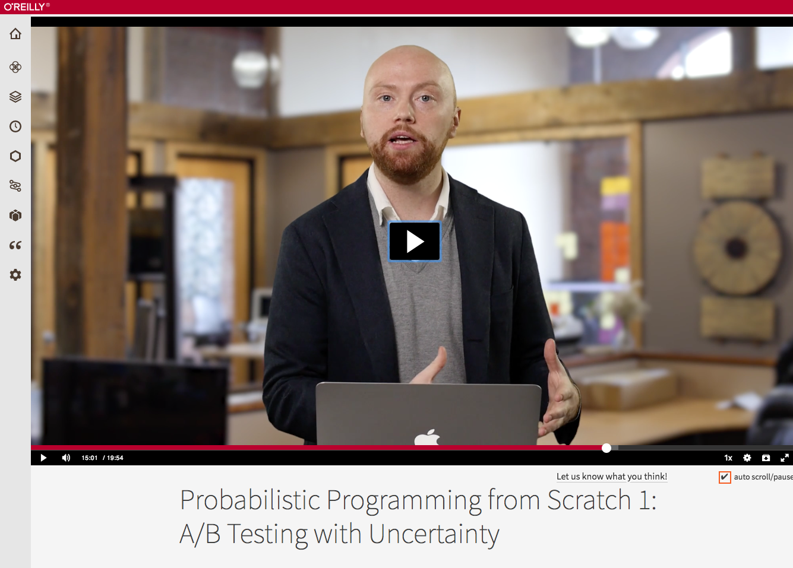
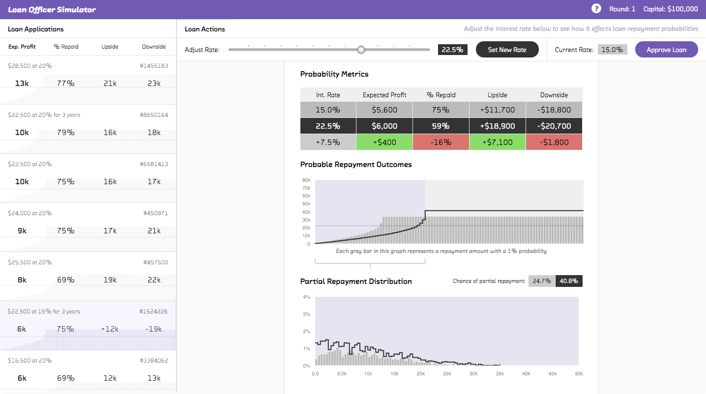

class: center, middle, full-bleed ## Probabilistic programming products #### Mike Lee Williams • [@mikepqr](http://twitter.com/mikepqr) • <mike@fastforwardlabs.com> • [fastforwardlabs.com/talks/ppp](http://fastforwardlabs.com/talks/ppp) #### Fast Forward Labs • [@fastforwardlabs](https://twitter.com/fastforwardlabs) • [fastforwardlabs.com](http://www.fastforwardlabs.com) ??? Welcome! Use the arrow keys to move forward and backward. Hit `p` on your keyboard to toggle the presenter notes on/off. --- class: full-bleed, center, middle  ??? Fast Forward Labs builds product prototypes and writes reports about advances in machine intelligence. You might want to become a subscriber! Our most recent report is about machine learning interpretability. --- class: full-bleed, center, middle  ??? We recently looked into probabilistic programming. Here are some of the highlights of that work. --- name: big-picture class: middle ### Bayesian inference is great in theory... - Quantify risk - Insert institutional knowledge ### but it's slow if you're not careful. ### Being careful requires cleverness... - Hamiltonian Monte Carlo with automatic differentiation and NUTS ### the cleverness is now ready to abstracted away 😎 ??? This talk is about probabilistic programming. But before I introduce it, I'm going to spend the first 1/2 of the talk explaining the problems probabilistic programming solves. Here's the outline of that first bit. --- class: center, middle, full-bleed  ??? Let's start with a story. I conduct this A/B test and get these results. Clearly layout B is better. --- class: center, middle, full-bleed  ??? In your head, your making this plot. If the cross is above the line, layout B is better. If it's below the line, layout A is. If I had a million visitors to both layouts then yes, very probably our conclusion is correct. But what if I had 25 visitors to layout A, and 20 visitors to layout B. Are you confident that these results would generalize to the real world? And what if it costs you $1m to deploy the change? Do you want to risk it? --- class: center, middle, full-bleed  ??? This is the central problem of data analysis. I don't care how big your data is. It's still bad. It suffers from measurement error, and it's incomplete. Any conclusions you derive from it are uncertain. A statement like "layout B is best" is an unfinished sentence. It's missing the second half, which should be a statement of how certain you are about that claim. --- class: center, middle, full-bleed  ??? Bayesian inference takes your prior beliefs and updates them in the light of the data you've collected, giving you a thing called a posterior distribution. That posterior is a measure of your uncertainty. --- class: center, middle, full-bleed  ??? To answer the question is layout A or layout B better, we compare the two posteriors. What's the answer? Layout A or layout B? We can't say! But if we apply Bayes's rule, as I did to draw this plot, what we can say is precisely how likely it is that layout B is better than layout A: it's about 85% in this case. So if it costs you hundreds of thousands of dollars to change your website, you're probably not confident enough. You don't only have the ability to say how likely possibility 1 is. You can say how likely all the other possibilities are! In that way you can quantify risk. This is the first huge advantage of this approach. We can assign probabilities to all possible outcomes. If we don't like what we can see, we can run the experiment for longer, until we're more confident. And if we can't run the experiment for longer, we can decide how much to bet, now we know the odds. That's the power of having the full probabilistic picture. The ability to quantify exactly how likely every possibility is, is not just a slight improvement. It opens up qualitatively new kinds of products. --- ## Use Bayesian inference When you - need to **quantify the probability of all possibilities**, not just determine which is most likely - want to make use of **institutional knowledge** - want to do **online learning** (i.e., continually update your model as data arrives) - want to do **active learning** (i.e., gather more information until your predictions reach some threshold of confidence) - want to use data to **decide if a more complicated model is justified** - have several **heterogeneous datasets** - need to **explain your decisions** to customers or regulators - have **sparse data** with a shared or hierarchical structure --- class: middle center full-bleed  ??? We skipped over pretty much all the mathematical details there. If you're interested, you might enjoy my recent series of interactive videos for O'Reilly. They show you how to do the simplest possible thing to implement Bayesian inference. You'll get a great understanding of what's going on. The downside is, the code we write is slow. --- ### Hamiltonian Monte Carlo - Explores efficiently... -- ### with autodiff - ...differentiates automatically... -- ### and NUTS - ...and is idiot-proof 😎 ??? Hamiltonian Monte Carlo is the latest and greatest. It's _much_ faster at finding the interesting, high probability bits of the problem. It's practical even if there are thousands of parameters. It does this it at a cost: it needs to know not just the probability of a given choice of parameters, but also the rate of change of that probability. That's the gradient. You get the gradient of a function by differentiating. If you remember your calculus, you'll remember that this wasn't always an easy thing to do, and it was rarely fun. The solution is automatic differentiation. What this approach allows, however, is for you to leave the calculus to the computer. If you give it the function, it's able to efficiently and accurately evaluate its derivative, or gradient. That allows Hamiltonian Monte Carlo to explore the probability space strategically, rather than at random as in rejection sampling, or semi-randomly as in Metropolis Hastings. Hamiltonian Monte Carlo was further improved a couple of years ago by NUTS (or the No U-Turn Sampler). That makes it more _robust_, which is the nice way of saying "idiot proof". Thanks to autodiff you no longer have to differentiate a function to use HMC. And thanks to NUTS, you no longer have to tune sensitive parameters to get it to work. --- template: big-picture --- class: center, middle, full-bleed  ??? This finally brings us to probabilistic programming, where the complexities and challenges I described get abstracted away in a programming paradigm. In these systems, industrial strength implementations of the latest and greatest inference algorithms are baked in to the language as one-liners. This is similar to the way a fiddly algorithm like back propagation is available in deep learning frameworks like Tensorflow or Theano. All that's left to do for the user of these systems is specify the model, i.e. describe the random process that, for a given choice of parameters, generates the observations. For a problem like A/B testing that's very simple. There's an unknown conversion probability, and each visitor converts with that probability. For more complicated problems it can be trickier to specify the model. Probabilistic programming languages make things easier by including fundamental ideals like probability distributions and random variables as primitives of the language. Now at this point, if you're a certain age, say my age or up, you may be saying this sounds a lot like BUGS (or WinBUGS). And yes, they were early probabilistic programming systems. But what's changed in the last 2 or so years with the arrival of Stan and pymc3 is that HMC is now widely available. And that means that internet-scale problems are now tractable. --- class: middle ```C /* define data */ data { int<lower=0> N; int<lower=0> N_features; matrix[N, N_features] X; int<lower=0,upper=1> repaid[N]; } /* define the thing you want to know */ parameters { vector[N_features] p_coef; } /* declare how the data is related to the thing you want to know */ model { vector[N] p; p_coef ~ cauchy(0, 2.5); p = logit(X * p_coef); repaid ~ bernoulli(p); } ``` ??? What does working with these languages look like? Well, here's almost the complete Stan listing for a product I'm going to show you in a second that predicts loan repayment based on income, outstanding debt, loan purpose, etc. And yes, it's very short! This is a side-product of distributions and RVs being primitives of the language. --- class: full-bleed  ??? This is one of the interactive products we built, that depends totally on the power to quantify the probability of all possibilities. It models consumer credit applications. --- class: full-bleed <img width="100%" src="img/nycrealestate.png"> ??? And this is another product we built that models the NYC real estate market. Fundamentally it's a linear regression, but it allows you to answer two questions that can only be answered with the full posterior distribution: - I have $x. What is the probability I will be able to afford a property in this location at this time in the future? - I want to have a y% chance of affording a property in this location. How much money do I need? --- class: full-bleed --- ## Options #### Stan - great for offline analysis 👍 - but it's very awkward to productize #### pymc3 - algorithmically half a step behind (although that's much less true than it used to be) - much easier to build products with 😎 #### Others - Anglican - Edward - Figaro ??? Every time you change your stan model, you need to change your application code too. They risk getting out of sync in ways that break things spectacularly or, even worse, subtly. Check out Anglican if you like Clojure and other LISPy languages, Edward if you're also interested in deep learning, and Figaro if you like Scala. --- ## Facebook Prophet  ??? It's not just academic purists and FFL working on this stuff. Facebook released a probabilistic programming product last month! Prophet is a Python and R application that uses Stan under the hood for general purpose seasonal forecasting. --- class: full-bleed, center, middle  ??? We made this plot with it in 30 minutes last week. It's great! --- ## Next steps - These slides, [fastforwardlabs.com/talks/ppp](http://fastforwardlabs.com/talks/ppp) - The NYC real estate prototype, [www.fastforwardlabs.com/pre](http://www.fastforwardlabs.com/pre/) - [_Probabilistic Programming From Scratch_](https://www.oreilly.com/learning/probabilistic-programming-from-scratch) (FFL/O'Reilly) - [The algorithms behind probabilsitic programming](http://blog.fastforwardlabs.com/2017/01/30/the-algorithms-behind-probabilistic-programming.html) (FFL blog) ## Contact - Mike Lee Williams • [@mikepqr](http://twitter.com/mikepqr) • <mike@fastforwardlabs.com> - Fast Forward Labs • [@fastforwardlabs](https://twitter.com/fastforwardlabs) • <contact@fastforwardlabs.com> • [fastforwardlabs.com](http://www.fastforwardlabs.com)